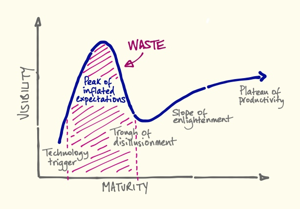

So according to a previous post on this blog, on the Hype Cycle for
big and open data we’re still on the upward slope of inflated expectations,
and that kind of implies that almost everything that’s going on right now
is at risk of being wasted effort.

That feels unfair; there’s a lot of worthwhile work going on, some very
fine brains attacking the problems from all angles and learning and sharing
new stuff all the time. So is that all wasted? Will we come out of it with
nothing useful? It would be nice to think we end up with something.
The hype we are talking about is along similar lines to the way the
public sector reports performance. We measure activity and call it results.
So on the open data front, the number of data sets released is used as a measure
of how great open data is going. 20, 500, 3000 data sets now made available …
that’s great, we’re not saying it’s not cause for celebration. The work that goes
into wrestling the data from its owner and cleaning it and structuring it is
massive, and that should be recognised. But … what else?
Our suspicion is that what we will have left, when we peak and start
plummeting down the other side, is a collection of well-tested ways in which
open data doesn’t work. Multiple dashboards that never get looked at. Dozens of
data visualisation toolkits that people played with a few times. A scattering of
bloated websites that shove out every data set a council owns wrapped up in the
usual jargon.
Are we any better off? A little.
Are we any better informed? Slightly.
Can we put our hand into the bucket of data and come out with useful
information? Yes, but not as much as we should be able to extract.
So let’s be realistic about what open data can do, and start focusing
on what we want it to do rather than just throwing it over the wall.
{kind=link}